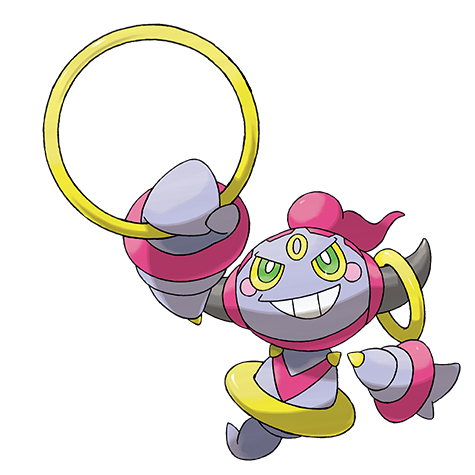

Sceptile
- Tipo: Grama
- Evolução: Evolui de Grovyle, a partir de Treecko.
- Características: Sceptile é extremamente veloz e usa suas folhas afiadas para ataques.
- Ataques: Leaf Blade e SolarBeam são alguns dos mais poderosos.
- Curiosidade: É conhecido por sua capacidade de atravessar grandes distâncias com agilidade.

Kadabra
- Tipo: Psíquico
- Evolução: Evolui de Abra e, depois, para Alakazam.
- Características: Kadabra é famoso por suas habilidades psíquicas, capaz de mover objetos com a mente.
- Ataques: Possui movimentos como Confusion e Psybeam.
- Curiosidade: Ele usa colheres para amplificar suas habilidades psíquicas.

Hoopa
- Tipo: Psíquico / Fantasma (Forma Confinada), Psíquico / Sombrio (Forma Desatada)
- Características: Hoopa é um Pokémon mítico que usa portais para viajar entre dimensões.
- Ataques: Hyperspace Hole e Psychic são alguns dos mais conhecidos.
- Curiosidade: É um dos poucos Pokémon míticos que pode mudar de forma.

Greninja
- Tipo: Água
- Evolução: Evolui de Frogadier, que por sua vez evolui de Froakie.
- Características: Greninja é conhecido por sua velocidade e habilidade de se misturar nas sombras.
- Ataques: Entre seus golpes mais famosos, está o Water Shuriken, que é um ataque rápido e afiado.
- Forma especial: Greninja de Ash, uma forma especial conhecida do anime, com poderes ainda maiores.